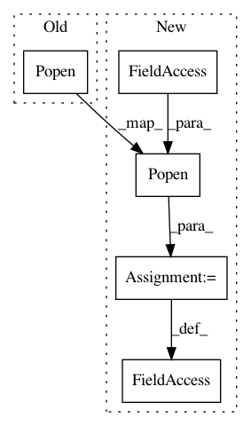

fa54e16fc67e50145f18011e2872287f67a90a69,tools/casper_tests.py,,,#,33
Before Change
print("[test_frontend] Initialize test database")
reset_db()
subprocess.Popen(["mkdir", "-p", "log"])
subprocess.Popen("tail -f log/*.log", cwd=web_client_path, shell=True)
web_client = subprocess.Popen("make", cwd=web_client_path)
print("[test_frontend] Waiting for supervisord to launch all server processes...")
After Change
print("[test_frontend] Initialize test database")
reset_db()
web_client = subprocess.Popen(["make", "monitor"], cwd=web_client_path)
print("[test_frontend] Waiting for supervisord to launch all server processes...")
timeout = 0
In pattern: SUPERPATTERN
Frequency: 3
Non-data size: 5
Instances
Project Name: cesium-ml/cesium
Commit Name: fa54e16fc67e50145f18011e2872287f67a90a69
Time: 2016-02-10
Author: stefanv@berkeley.edu
File Name: tools/casper_tests.py
Class Name:
Method Name:
Project Name: pyprob/pyprob
Commit Name: d2eb64141030348ad5555b9ed7295130adfe0900
Time: 2018-02-20
Author: atilimgunes.baydin@gmail.com
File Name: tests/test_model_remote.py
Class Name:
Method Name:
Project Name: flow-project/flow
Commit Name: c6d0bd231bb5b2228e3416b80a5da1b9306e5f69
Time: 2017-12-24
Author: cathywu@eecs.berkeley.edu
File Name: flow/envs/base_env.py
Class Name: SumoEnvironment
Method Name: start_sumo